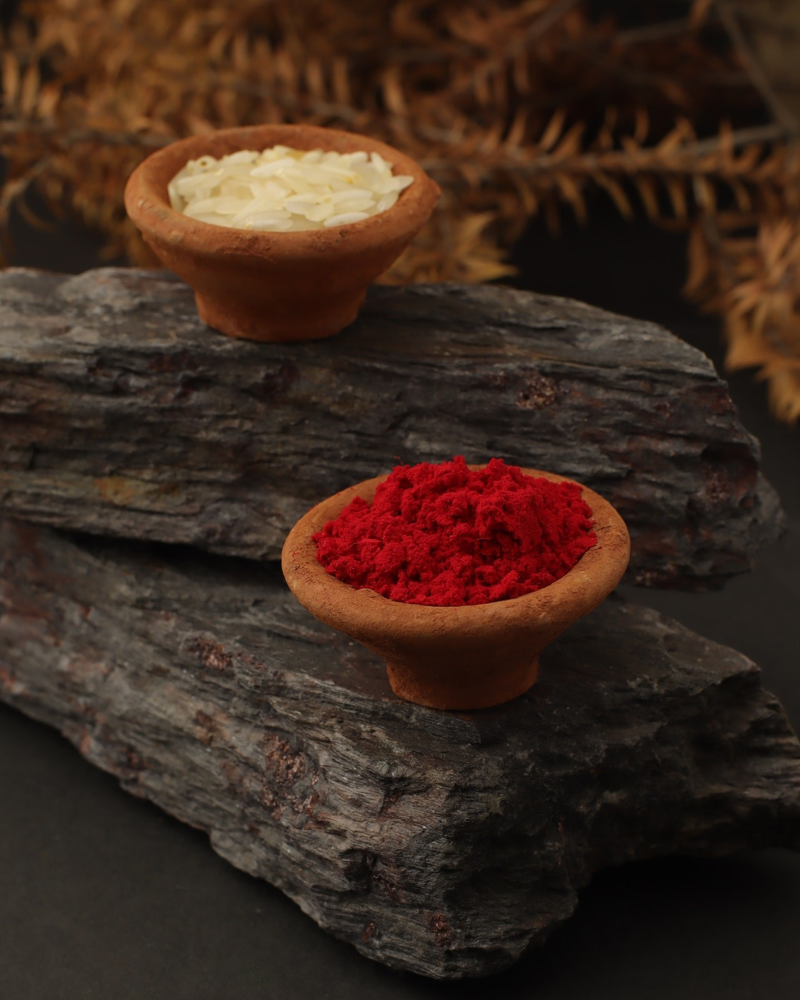

SOHAN SAHOO
Connect
Open Instagram
CUPCAKES
ILLUSION OF DREAMS
WORLD OF PARADISE
YOU
EXPRESSION
THE GIRL WHO LOVES RAIN
THE ONE TIME WAVE
DATE UNDER THE MOON
THE REALISATION

RECIPE FOR GETTING GIFT ON RAKHI
EMPTINESS
HAPPINESS
EVER HAD A FRIEND
SACRIFICE
UNKNOWN
SUSHANT SINGH RAJPUT
EVERY ONE SIDED LOVE
THE INSANE ONE
INSIDE ME
THE PERFECT MOMENT
SHE'S MY FEVORITE PERSON
ONLY US
THE OTHER TIME
FIRST TASTE OF LOVE
SHOULD HAVE SPOKEN EARLIER
PLAYMATE SINCE 2006
DEAR CRUSH
2000'S
IMMATURE
USED TO IT
MY MESSY TEENAGE
DREAMING